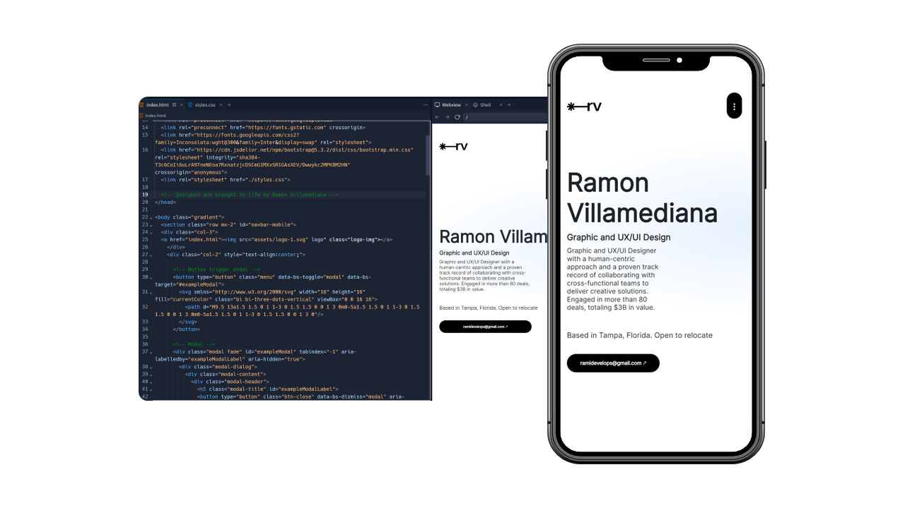
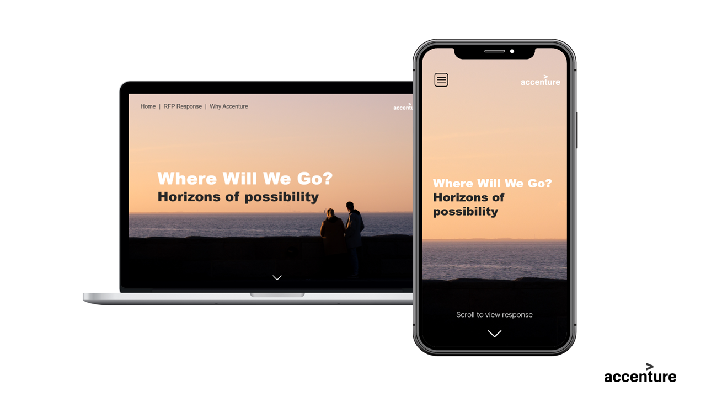
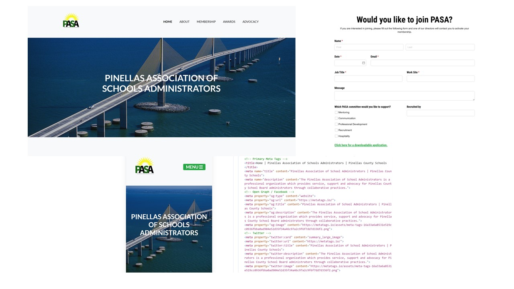
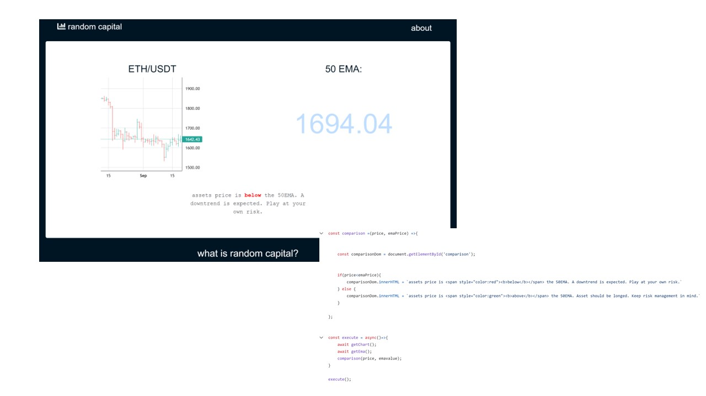

Frontend development work.
Tools Utilized: HTML, CSS, Webflow, Framer, Javascript, Bootstrap, React.jsPersonal Portfolio: Fully responsive, modern, and accessible. Showcasing my work and experience with minimalistic designs and animations. Hard-coded from scratch using HTML, CSS, Bootstrap, and Javascript. 
Designed and developed a responsive microsite that provided general information about Accenture's response to this RFP. The main purpose was to offer our client easy access to key factors about our response and illustrate why we could be the perfect partner for them. (Prototype is confidential and the property of Accenture.) 
The PASA website is currently online and serving school administrators in Pinellas County. (Click on PASA to access the website.) I led the entire frontend development efforts from scratch, including responsive design, forms, and interactions, meticulously following the blueprint handed by the design team. Click below to access. 
"Random Capital" is a web-app that points out if an asset is trading above an exponential moving average (EMA). This web app works by fetching a chart from Binance's API and the EMA value from TA-API, then values are compared to determine if the asset is above or below the EMA. (Click below to access website) 